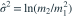
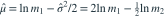

，两参数未知。样本一阶、二阶原点矩分别记 。 的矩估计为？
的矩估计为？
的矩估计为？- A
- B
- C
- D
我已思考，展开答案与解析
正确答案：C
- 总体矩满足 、。
- 联立矩方程得

，
。
易错提醒对原变量做矩估计不同于先取对数再求样本均值。
JYSG · 432精选 · 册内复旦大学432·2025年·10(1)；PDF第41页（印刷页39）
原大题拆解
的矩估计为？
，
。JYSG · 432精选 · 册内复旦大学432·2025年·10(1)；PDF第41页（印刷页39）
原大题拆解